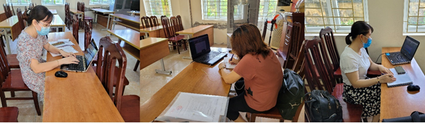
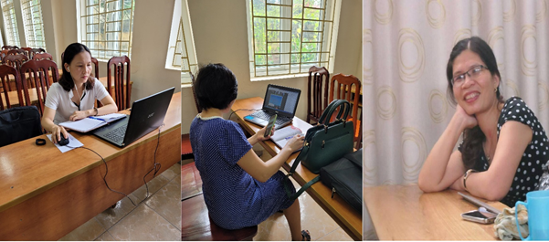
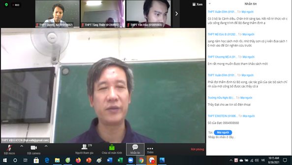

Năm học 2021- 2022 do điều kiện dịch bệnh, để đàm bảo an toàn cho các thầy cô nhưng vẫn thống nhất được nhiệm vụ năm học mới, Sở Giáo dục và Đào tạo Hà Nội đã tổ chức họp giáo vụ Online vào hai ngày là ngày 25 và ngày 26 tháng 8 năm 2021
Mỗi trường là một điểm cầu được kết nối qua app K12ONLINE. Ban giám hiệu Trường THPT Dương Xá đã có sự phân công chi tiết tới các nhóm trưởng các môn học họp để nắm bắt tình hình nhiệm vụ năm học mới. Về trang thiết bị phục vụ họp giáo vụ, trong buổi chiều ngày 24 tháng 8 năm 2021, các máy tính được cài đặt ứng dụng và test micro và đường truyền.
Theo sự phân công của ban tổ chức cuộc họp, buổi sáng ngày 25 tháng 8 diễn ra họp giáo vụ của ba bộ môn là Lịch sử, Địa lý và Tiếng Anh.
Các thầy cô là nhóm trưởng các bộ môn, luôn gương mẫu và chủ động thực hiện tốt phân việc được giao. Các thầy cô đã có mặt đúng giờ và nghiêm túc tham gia họp, thảo luận chuyên môn.
Cùng ngày, chiều ngày 25 tháng 8 diễn ra họp giáo vụ đầu năm của ba môn học là Toán, Ngữ văn và Giáo dục công dân. Năm học 2020 – 2021, cả ba bộ môn học này của nhà trường đều gặt hái được rất nhiều thành công. Môn Toán đạt 2 giải Nhì cuộc thi học sinh giỏi thành phố, điểm trung bình thi tốt nghiệp 7,4 ; môn Văn điểm trung bình thi tốt nghiệp 7,5 và môn Giáo dục công dân đạt thành tích xuất sắc trong kỳ thi Tốt nghiệp THPT vươn lên đứng thứ 3 toàn thành phố. Trong bối cảnh dịch bệnh, dạy - học bị ảnh hưởng nên kết quả trên là kết quả sự cố gắng của nhà trường và đặc biệt là sự sát sao với chuyên môn của từng bộ môn và tâm huyết của mỗi thầy cô.
Ngày làm việc thứ hai, sáng 26 tháng 8, có 5 nhóm chuyên môn họp giáo vụ tại ba phòng họp. Môn Vật lý và kỹ thuật công nghiệp được thầy Hà Nam Sơn hướng dẫn triển khai nhiệm vụ năm học. Môn Sinh học và Kỹ thuật nông nghiệp, Tin học bố trí các phòng họp riêng. Các môn cuối cùng gồm Hóa học, QPAN và Thể dục thực hiện chiều ngày 26 tháng 8. Có nhiều nội dung chuyên môn được cập nhật phù hợp với tình hình diễn biến phức tạp của dịch bệnh, rất kịp thời để các tổ nhóm triển khai, xây dựng kế hoạch năm học. Các thầy cô đều làm việc với tinh thần trách nhiệm cao.
Kết thúc 2 ngày làm việc nghiêm túc, các thầy cô nhiệt tình, trách nhiệm nắm bắt tinh thần và những thống nhất chỉ đạo chuyên môn toàn thành phố. Qua cuộc họp giúp các tổ nhóm và từng cá nhân xây dựng kế hoạch năm học bám sát và hiệu quả. Trường THPT Dương Xá đã hoàn thành họp giáo vụ đầu năm học 2021- 2022 với 14 nhóm chuyên môn. Các thầy cô trưởng nhóm chuyên tiếp tục chuyển tải, cụ thể hóa những nội dung được họp để triển khai tời từng thành viên trong tổ, tạo sự nhất trí và đồng thuận cao trong công tác chuyên môn. Chúc Trường THPT Dương Xá năm học mới phát huy sức mạnh tập thể: đoàn kết – hiệu quả - chất lượng ./.